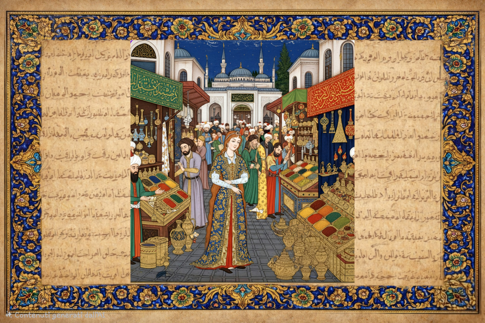
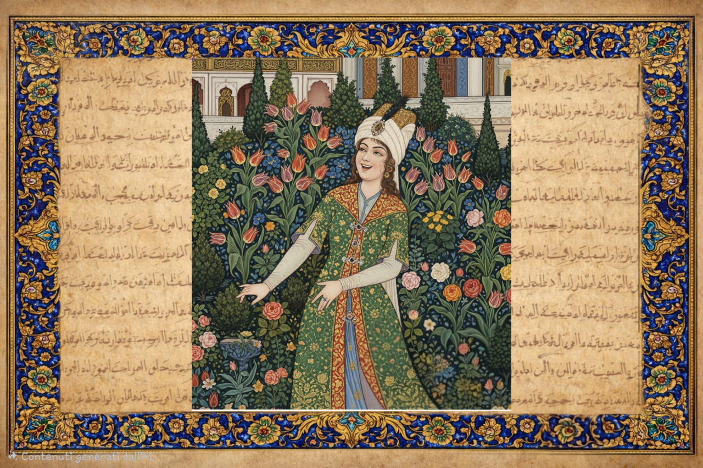
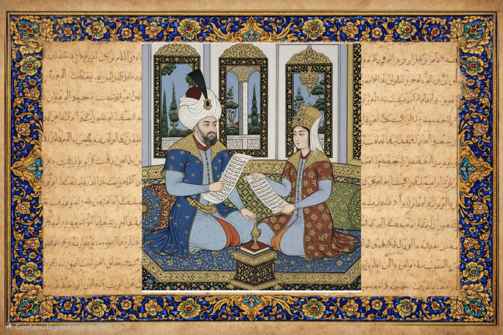
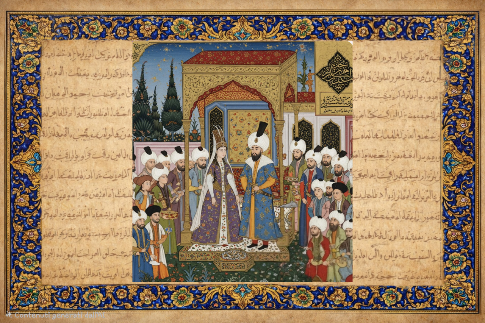
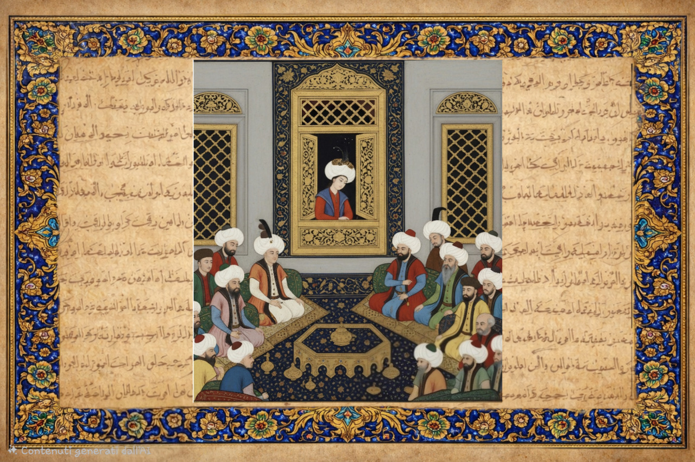
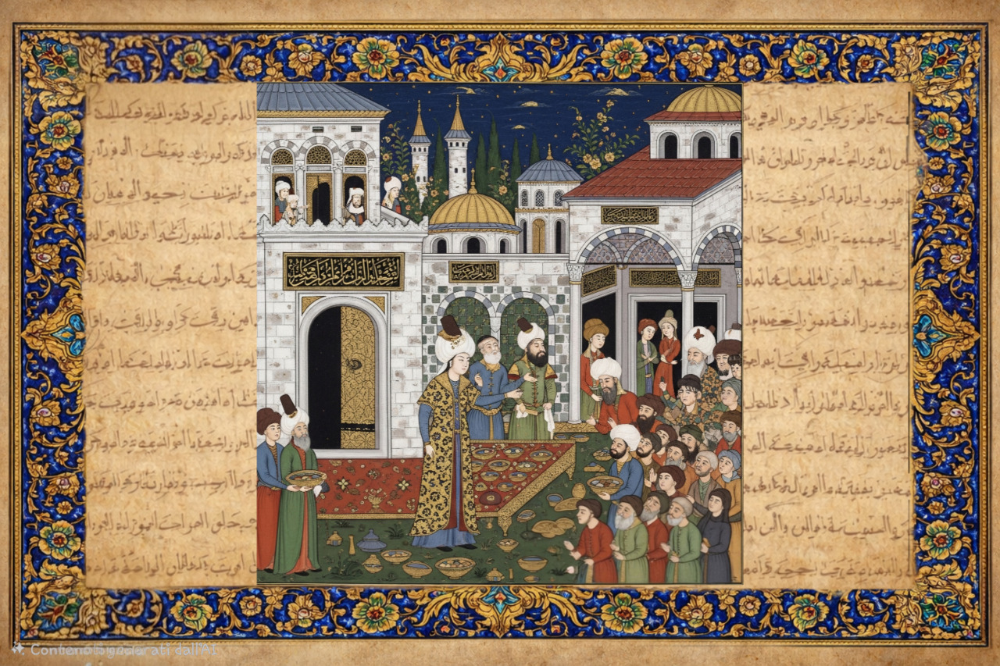
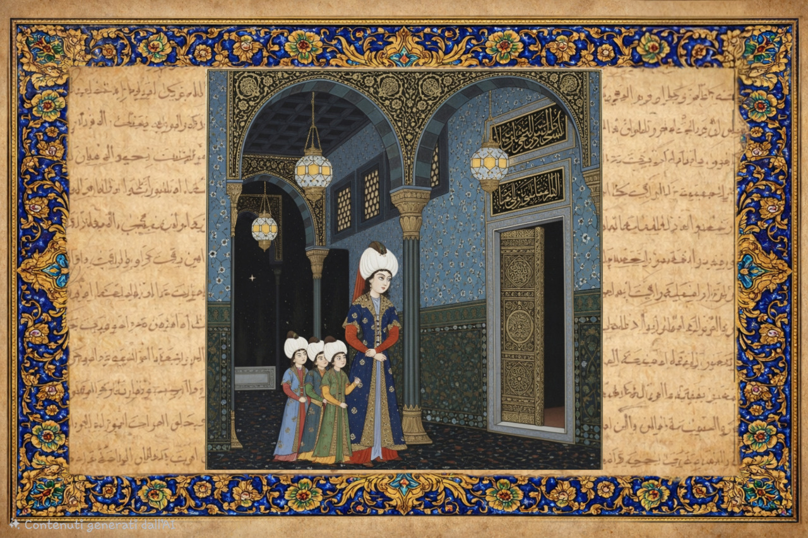
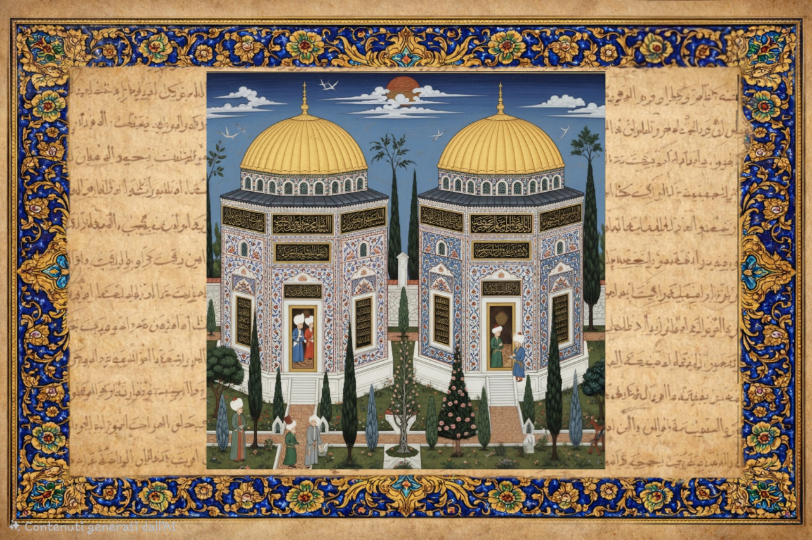

CAPÍTULO 01
La joven rutena


Nacida en Rutenia, en la actual Ucrania, tradicionalmente se la conoce como Aleksandra Lisowska y se la describe como hija de un sacerdote ortodoxo. Capturada por los tártaros de Crimea durante una incursión, fue esclavizada y llevada a Estambul. Su inteligencia vivaz y su espíritu resistente la ayudarían a encontrar su camino en el harén del sultán.
CAPÍTULO 02
Hürrem: La alegre

En el harén aprendió turco, música y el arte de la conversación. Su carácter alegre le valió el nombre de Hürrem, que significa «la alegre». Pronto llamó la atención del joven sultán Solimán.
CAPÍTULO 03
El amor y la poesía

No fue solo la belleza lo que conquistó a Solimán, sino también la inteligencia. Hürrem se convirtió en su confidente, su musa y una influyente consejera. Bajo el seudónimo de Muhibbi, «el amante», Solimán le dedicó poemas y la llamó su Estambul, su Karaman, su Anatolia y Rumelia.
CAPÍTULO 04
Un matrimonio excepcional

Solimán rompió con la práctica de las últimas generaciones de sultanes otomanos: liberó a Hürrem de la esclavitud y se casó legalmente con ella. El matrimonio le otorgó una posición excepcional en la corte y marcó un cambio en la historia de la dinastía.
CAPÍTULO 05
La influencia política

Hürrem llegó a ser una de las mujeres más influyentes de su época. Mantuvo correspondencia con soberanos europeos, entre ellos el rey de Polonia, e intervino en asuntos diplomáticos. Su posición contribuyó a abrir el período conocido después como el Sultanato de las Mujeres.
CAPÍTULO 06
Haseki: La benefactora

Dedicó una parte considerable de su riqueza a fundaciones benéficas. El complejo Haseki Sultan de Estambul incluía una mezquita, instituciones educativas y un hospital. En Jerusalén fundó un comedor público cuya labor caritativa continuó durante siglos.
CAPÍTULO 07
La lucha por la supervivencia

La vida en el harén también implicaba intensas rivalidades dinásticas. El sistema sucesorio y la práctica del fratricidio amenazaban la vida de los príncipes. A menudo se ha acusado a Hürrem de conspirar contra el gran visir İbrahim y el príncipe Mustafa, el hijo mayor de Solimán, pero su responsabilidad precisa sigue siendo objeto de debate. Su historia combina ambición política y preocupación por sus hijos.
CAPÍTULO 08
Unidos por la eternidad

Hürrem murió en 1558, ocho años antes que Solimán. Hoy sus mausoleos separados se alzan cerca uno del otro en el jardín de la mezquita de Süleymaniye, en Estambul. Sus sepulturas evocan una de las relaciones más conocidas de la historia otomana.
LA ÚLTIMA PUERTA
Te espera un pequeño secreto
Responde correctamente y desbloquea un contenido especial sobre Hürrem para leer en la web.
Tu contenido especial está desbloqueado ✨
Roxelana: el retrato de Hürrem y su representación en el arte europeo. La página del premio está en italiano.
Abre el premio web (italiano) →